|
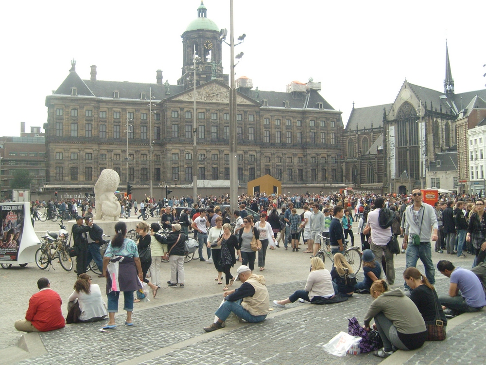 There are always crowds of people milling about in front of the Royal Palace at Dam Square in Amsterdam. |
{kind=link}
Visiting Amsterdam
| Subway map | Weather outlook | City map | Day trips from Amsterdam |
Amsterdam, capital of the Netherlands, is a truly cosmopolitan country and the epitome of tolerance, whether it's drugs, prostitution or immigration. It is not a "glamour" city in the same way that Paris, London or Barcelona is, yet the first-time visitor is bound to be awed in more ways than one - by its architecture, its leafy streets, its numerous canals and its healthy way of life with bicycles being truly the king of the road.
|
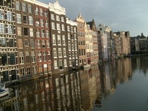 It is not uncommon to see houses right by the side of the canals. End the day's sightseeing with a relaxing canal cruise. |
 A common scene in Amsterdam, aptly called the "Venice of the North" as there are over 1,500 bridges for its canals. |
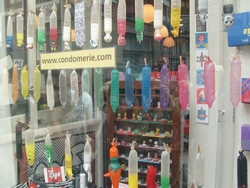 A shop in one of the red-light districts of Amsterdam proudly displays its collection of condoms of every shape and colour. |
{kind=link}
{kind=link}
The Royal Palace is the centrepiece of Dam Square, which together with the Leidseplein Square and the Rembrandtplein Square, are the very pulse of Amsterdam city life.
One of the places to visit in Amsterdam is the flower market (Bloemenmarkt) which is actually a floating market as the stalls float in the Singel canal. A more popular type of market not to be missed is the Albert Cuyp market along Albert Cuyp street, behind which can be found many ethnic restaurants. It is perhaps the largest daytime market in the whole of Europe.
Apart from the Rijksmuseum and the Van Gogh Museum (see below), art lovers also make it a point to visit the Rembrandt House Museum at number 4, Jodenbreestraat. Rembrandt lived here from 1639 till 1658 when it was auctioned due to his bankruptcy, after which he had to live in a small, rented house till his death in 1669. Combine this visit with a visit to the flea market at Waterlooplein, which is not far away from here.
Queen's Day (Koninginnedag) is celebrated in a big way in Amsterdam on the 30th of April each year (or on the 29th if the 30th is a Sunday). On that day too "freemarkets" (vrijmarkt), where everyone is allowed to sell things in the streets, are held all over Netherlands and many people are dressed in orange for the occasion.
 The Rembrandt House Museum in Jodenbreestraat. |
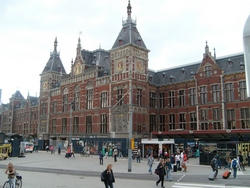 The Centraal Station is right in the centre of Amsterdam city. |
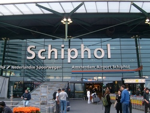 The Schiphol Airport. There is a direct train to the Centraal Station from here. |
|
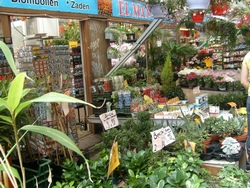 Colourful flowers and flower bulbs adorn the stalls at the Bloemenmarket. |
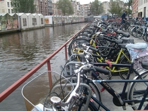 The flower stalls (left) actually float on the Singel canal. |
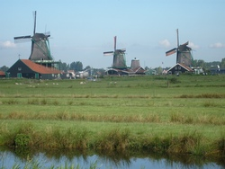 Windmills at the Zaanse Schans, 10 miles northwest of Amsterdam. |
|
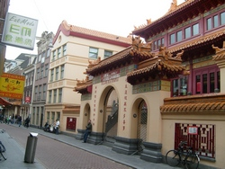 The He Hua Buddhist temple in Zeedijk, Amsterdam's Chinatown district. |
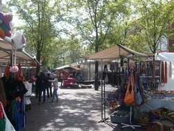 The flea market at Waterlooplein is worth a visit as there are some 300 stalls there. |
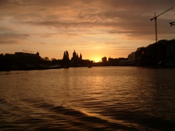 Sunset at Amsterdam as seen from a canal cruise in the evening. |
{kind=link}
{kind=link}
{kind=link}
{kind=link}
{kind=link}
{kind=link}
{kind=link}
{kind=link}